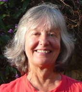

Dorset and Somerset Homeopathy
Homeopathy is a form of holistic medicine, which has been used for over 200 years to treat both acute and chronic medical conditions. Homeopathy is growing in popularity; it is now used by 6 million people in the UK, 100 million people in the European Union, and in India alone, 100 million people depend solely on homeopathy for their medical care.
For more information about homeopathy’s individual and holistic approach, go to:
http://www.homeopathy-soh.org and https://www.hri-research.org/about-hri/
An individual, holistic homeopathy consultation

When we meet, via a video call, you will have the opportunity to tell me exactly how you feel and how you experience what is out of balance in your life. A first consultation will last an hour to an hour and a half. I will then prescribe the homeopathic remedy, which is right for you. Once you begin your homeopathic treatment, you can contact me at any time to discuss how you are responding. We will usually book a review session four or five weeks after you begin treatment.
Consultations
I can see you in Dorchester at the Dorchester Yoga and Therapy Centre, Trinity Street.
Feel free to email me.
About me
I first used homeopathy for my children when they were young, and because I saw them respond so well, I completed a four-year homeopathy course. I’ve never looked back since I opened my first homeopathy practice in 1985. I offer consultations for people with a range of different health conditions, and enjoy offering homeopathy to babies and children.
I’m registered with the Society of Homeopaths, the UK’s largest register for homeopaths.
I’m pleased to have contributed to the development of the profession since 1991 in the UK, with the Society of Homeopaths as a board member and Chair, and in Europe as Vice Chair of the European Central Council of Homeopaths. I’m interested in developing research in homeopathy and I have an MSc in Integrated Health with the University of Central Lancashire.
Testimonials
“I have consulted homeopaths before, but never felt so deeply listened to as I did by Zofia when she took my case.”
“The remedies worked well. I highly recommend Zofia”
“Your presence is so helpful. You are such a good listener.”
Research
Research in homeopathy shows how effective it is. For more information on homeopathy research go to:
http://www.homeopathy-soh.org/research
Fees for homeopathy consultations
Dorchester £82 first consultation. £46 follow-ups.
Please contact me to discuss reduced fees if you need to.
Contact me
email: zofiadymitr@protonmail.com